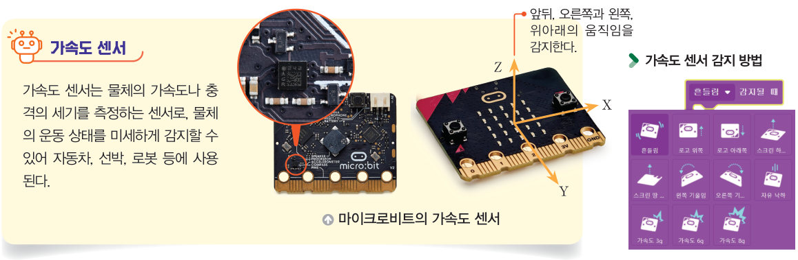
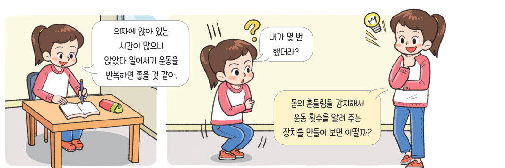
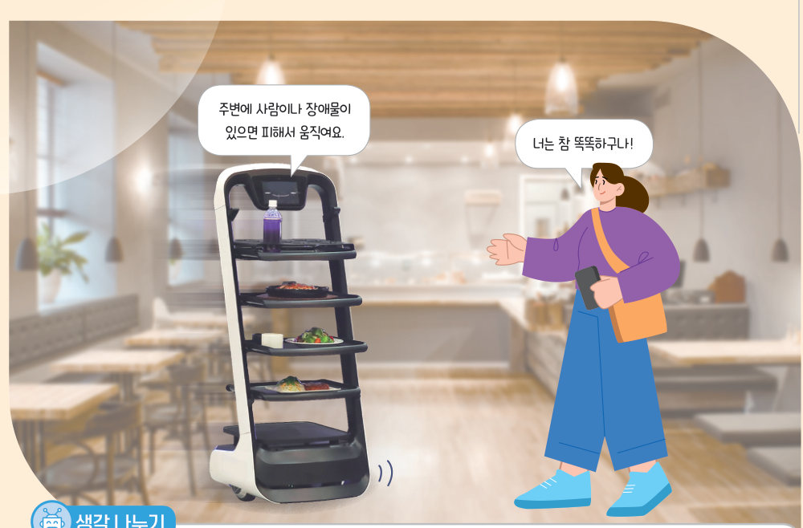
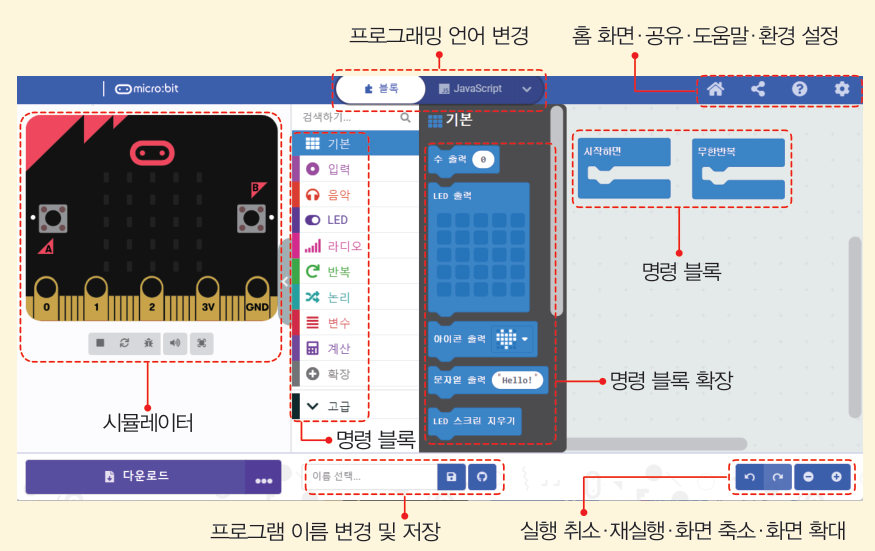
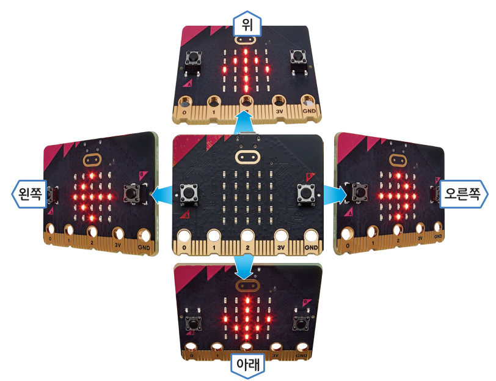

← KISPP · 중학교 정보 Ⅰ. 컴퓨팅 시스템


살아있는 교과서 · Ⅰ. 컴퓨팅 시스템 · 2. 피지컬 컴퓨팅 프로그래밍 · 01 18~23쪽
운동 횟수
표시 장치 만들기
앉았다 일어서기를 몇 번 했는지 세어 주는 장치를 만들어 보자. 문제를 작은 문제로 나누어 알고리즘을 설계하고, 교과서 블록 코드를 가상 마이크로비트로 실행한 뒤, 기울기 화살표와 주사위 장치를 직접 완성해 보자.
🎯 학습 목표 — 문제 해결에 적합한 센서를 선택하여 동작을 제어하는 프로그램을 작성하고, 몸의 흔들림을 감지하여 운동 횟수를 알려 주는 장치를 만들 수 있다.
중단원 열기서빙 로봇은 어떻게 장애물을 피할까? 18쪽
음식점에서 서빙 로봇이 손님에게 음식을 가져다주는 모습은 이제 낯설지 않다. 서빙 로봇은 내장된 센서로 공간과 사물을 감지하고 장애물을 피하여 목적지까지 이동한다. 로봇이 서빙하면 어떤 장점이 있을지 생각해 보자.

18쪽“주변에 사람이나 장애물이 있으면 피해서 움직여요.” “너는 참 똑똑하구나!”
💭생각 나누기 서빙 로봇이 센서를 이용해 거리를 감지하거나 장애물을 피하는 것처럼 센서를 사용하여 만든 제품에는 어떤 것이 있는지 이야기해 보자.
문제 상황 · 문제의 이해와 분석운동 횟수 표시 장치 만들기 19~20쪽
19쪽“의자에 앉아 있는 시간이 많으니 앉았다 일어서기 운동을 반복하면 좋을 것 같아.” “내가 몇 번 했더라?” “몸의 흔들림을 감지해서 운동 횟수를 알려 주는 장치를 만들어 보면 어떨까?”
몸의 흔들림을 감지하여 운동 횟수를 알려 주는 장치를 만들려고 한다. 가속도 센서로 흔들림을 감지하고, 버튼을 누르면 현재 운동 횟수를 보여 주며, 또 다른 버튼을 누르면 운동 횟수를 초기화하는 피지컬 컴퓨팅 시스템을 만들어 보자.
1문제 나누기 작은 문제와 설명을 연결해 보자.
| 초기화 | |
| 흔들림 감지하기 | |
| 운동 횟수 안내하기 | |
| 운동 횟수 재설정하기 | |
2알고리즘 설계하기 알고리즘을 작은 문제 순서대로 놓아 보자. (끌어서 순서 바꾸기)
- A 버튼을 누르면 현재 ‘운동 횟수’ 변수를 LED 스크린에 출력한다.
- ‘운동 횟수’ 변수를 생성하고 0으로 초기화한다.
- B 버튼을 누르면 ‘운동 횟수’ 변수를 0으로 재설정한다.
- 흔들림이 감지되면 ‘운동 횟수’ 변수를 1 증가시킨다.
변수 값을 저장하고 참조할 수 있는 메모리 공간 · 알고리즘 문제를 해결하기 위한 절차
해 보기 · 개별센서가 사용되는 피지컬 컴퓨팅 시스템 알아보기 20쪽
1마이크로비트에 내장된 입력 장치와 같은 센서가 쓰이는 제품을 연결해 보자.
| 시계 — 시간을 조정할 때 | |
| 스마트폰 화면 — 주변이 어두우면 화면 밝기를 자동으로 낮출 때 | |
| 엘리베이터 — 손가락을 대면 층이 선택될 때 | |
| 보일러 조절기 — 방이 추우면 난방을 켤 때 | |
| 스마트폰 지도 — 내가 바라보는 방향을 표시할 때 | |
| 만보기 앱 — 걸음 수를 셀 때 | |
| 인공지능 스피커 — 말소리를 들을 때 | |
프로그래밍하기 · 평가하기운동 횟수 표시 장치를 가상 마이크로비트로 실행해 보자 21~22쪽

21쪽마이크로비트 프로그래밍 환경(메이크코드) — 블록 또는 자바스크립트로 프로그램을 작성하고 시뮬레이터로 결과를 바로 확인할 수 있다(https://makecode.microbit.org).
1평가하기 가상 마이크로비트로 직접 확인하고 답해 보자.
| 프로그램을 실행하기 전 운동 횟수가 0인가? | |
| 운동 횟수가 몸의 흔들림을 감지하여 누적되는가? | |
| A 버튼을 누르면 현재 운동 횟수를 보여 주는가? | |
| B 버튼을 누르면 운동 횟수가 0으로 재설정되는가? | |
해 보기 · 모둠가속도 센서를 활용한 피지컬 컴퓨팅 장치 만들기 23쪽
1 기울인 방향을 화살표로 안내하는 장치를 만들어 보자. 조건: 왼쪽으로 기울이면 LED 스크린에 ←, 위로 기울이면 ↑, 오른쪽으로 기울이면 →, 아래로 기울이면 ↓를 표시한다.

23쪽기울인 방향에 따라 화살표를 표시하는 마이크로비트
1각 ‘~ 감지될 때’ 블록 안에 넣을 LED 출력 아이콘을 골라 내 프로그램을 완성하자. 아래 가상 마이크로비트에서 바로 실행돼요.
| 왼쪽 기울임 감지될 때 | |
| 로고 위쪽(위로 기울임) 감지될 때 | |
| 오른쪽 기울임 감지될 때 | |
| 로고 아래쪽(아래로 기울임) 감지될 때 | |
2 흔들림을 감지하면 LED 스크린에 1부터 6까지 임의의 수를 주사위 모양으로 표시해 주는 프로그램을 작성해 보자.
흔들어 보세요. 나온 눈이 여기에 쌓여요.
확인 꼭꼭 · 단원 평가하기운동 횟수 표시 장치 41쪽
다음과 같이 코드를 작성했다.
05A 버튼을 세 번째 눌렀을 때 출력되는 숫자는?
07만보계는 걸음 수를 측정하는 장치로 최근에는 스마트폰의 센서를 통해 구현할 수 있어 여러 가지 만보기 앱으로 출시되고 있다.
정리하기운동 횟수 표시 장치 36쪽
| 평가 기준 | 스스로 평가 |
|---|
| 컴퓨팅 사고력 문제 해결에 필요한 피지컬 컴퓨팅 구성 요소(가속도 센서, 버튼, LED 스크린)를 선택할 수 있는가? | |
| 컴퓨팅 사고력 변수를 사용하여 운동 횟수를 세는 프로그램을 이해했는가? | |
| 디지털 문화 소양 친구들과 역할을 나누어 장치를 설계했는가? | |